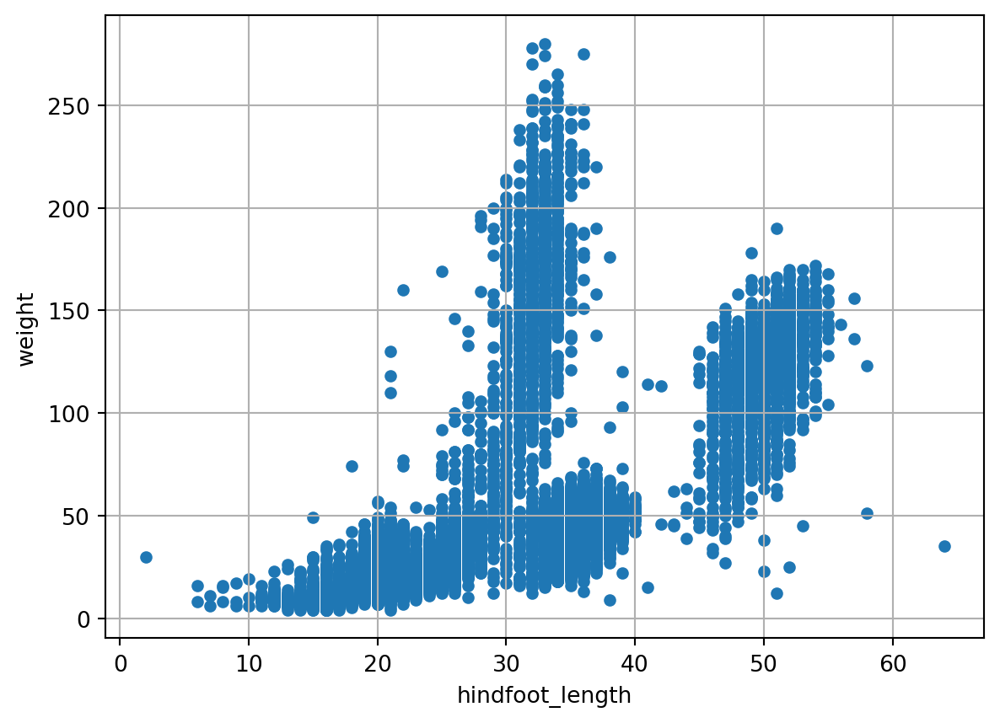
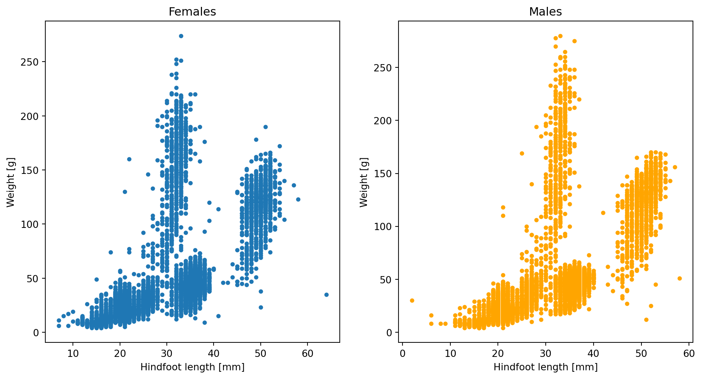

import pandas as pd9 Data Visualization
9.1 Data Visualization with python
Matplotlib is one of the most popular and widely-used data visualization libraries for Python. Matplotlib was inspired by the plotting functionalities of MATLAB (a non-open source programming language). It provides a comprehensive set of tools for creating a broad variety of plot types, such as line plots, scatter plots, bar plots, histograms, heatmaps, and many more.
In this session we will go through the main matplotlib concepts and we will generate several plots to illustrate the potential of matplotlib.
9.2 Preliminaries
We begin importing the pandas package in the same way we did in previous sessions:
Usually the first thing to do to start visualizing data with python is importing your visualization library, in our case the module pyplot from the matplotlib library. As with many of our previous imports, we import the module under an ‘alias’ (alternate shorter name) for convenience.
import matplotlib.pyplot as pltA slightly different, but equivalent way to import pyplot is the following:
from matplotlib import pyplot as pltWe also specify the command %matplotlib inline so that, when plotting, Jupyter Notebook will not display the plots into new windows, but in the notebook itself (you are free to NOT run %matplotlib inline, make a plot, and see what happens!).
%matplotlib inlineFinally, as in previous sessions, we load the survey data into a pandas DataFrame and print the column names, just to see what data we can display in our plots:
surveys = pd.read_csv(('../course_materials/data/surveys.csv'))
#in your case the path should probably be 'data/surveys.csv'
surveys.columnsIndex(['record_id', 'month', 'day', 'year', 'plot_id', 'species_id', 'sex',
'hindfoot_length', 'weight'],
dtype='object')9.3 Simple data visualization
As you already found in session 6.5, data stored in pandas DataFrames can be visualized using a ‘method’ called (surprisingly!) plot. This ‘method’ contains all the functionalities of the pyplot module of matplotlib and can be used on pandas DataFrames directly, without explicitly calling (and importing) pyplot. Let’s have a look at a simple example, let’s plot the weight of our penguins as a function of hindfoot length:
surveys.plot(x='hindfoot_length',y='weight',kind='scatter',grid=True)<AxesSubplot: xlabel='hindfoot_length', ylabel='weight'>
In the previous example we plotted weight VS hindfoot length using a scatter plot. The type of plot is specified via the argument kind, you can check out all the available plot categories here. One of the advantages of the DataFrame plot method is that we can specify the columns to plot simply referring to their names, these will also be automatically used as labels for the x and y axes (or only the x axis depending on the kind of plot). In a single line we can explore possible correlations between the columns of our DataFrame. We will now try to create the same plot using the scatter function from matplotlib’s pyplot module:
plt.scatter(x = surveys['hindfoot_length'],y = surveys['weight'], s=16)
plt.grid()
plt.ylabel('weight')
plt.xlabel('hindfoot_length')Text(0.5, 0, 'hindfoot_length')
As you can see the resulting plot is the same as above. When using plt.scatter we need some few more lines of code to get to this result, but plt provides more options to further customize the plot if we would want to.
Expand to learn about Matplotlib plot structure
In the previous examples we generated very simple plots to have a quick look at the data stored in our pandas DataFrame. However, with Matplotlib you can customize many more aspects of your plot: axes, x and y ticks and labels, titles, legends, and much more. To get full control of the plots generated with Matplotlib.pyplot, it is important to be aware of the jargon used to describe the different layers of the figures that you create. Knowing the technical matplotlib language will be also of aid when asking AI tools to generate a plotting recipe for us (and to understand it!).
- At the higher level we have Figures. A Figure is simply the total white space where you will organise your plots. You may think of it as the white page were you are going to draw your plots or also as a box containing all your plots. You can both have a single plot per Figure or multiple plots sharing the same Figure;
- At a lower level we have Axes. Axes are contained into Figures. Axes is the name of a single plot or graph. This is probably the most confusing convention of matplotlib, as the word Axes, in common language, may indicate the x axis and y axis of a plot, but in matplotlib axes refers to a single entire plot. Be aware of this difference! You can have a single Axes per Figure, so one plot per Figure (see Plot1 on the left of the figure below) or multiple Axes per Figure, like in Plot2 (on the right) where the same Figure contains three plots distributed in two rows: two on top and one on the bottom;
- Finally, each Axes (aka each plot) contains two Axis, i.e. x and y axis, the guidelines to populate your plots with data.

To summarize, matplotlib organizes plots into Figures, Axes, and Axis. A Figure is a canvas that can contain one or more Axes. An Axes is where data is plotted along two Axis, x and y. Specifying parameters at these three different levels, you can customize your plots to the finest details.
Certain attributes like the Figure size and the number of plots inside the Figure belong to the Figure level. Ticks, labels, plot title (also the entire figure can have a title), legend, etc belong to the Axes level. Data is plotted on Axes according to the specified x and y Axis. The main features of a “typical” plot generated with matplotlib are well summarized by the picture below from matplotlib documentation:
<img src="images/anatomy.jpeg" alt="Plot Main Features" width="70%">9.4 More plotting options
Looking at our previous visualization, it seems that x and y label are too small, data points often overlap each other, and a title for the plot is missing. Furthermore, for publication purposes, we want our plot to occupy a space of 6x6 inches. Let’s apply these specifications to our simple visualization:
ax = surveys.plot(x='hindfoot_length',y='weight',kind='scatter',grid=True, s=12, figsize=(6,6), title = 'Scatter plot')
ax.set_xlabel(xlabel = 'Hindfoot Length [cm]', fontsize=14)
ax.set_ylabel(ylabel = 'Weight [Kg]', fontsize=14)
print(type(ax))<class 'matplotlib.axes._subplots.AxesSubplot'>
This time we added some new parameters to our call:
sregulates the size of the data pointsfigsizethe (x,y) dimention in inchestitleis a string containing the title of our plot
To modify the character sizes of the x and y labels we need to write two extra lines of code. To be able to do this we assigned the first line to a ‘variable’ or ‘object’ that we name ax. Then we used the set_xlabel method of the ax object to specify the x label and its character size. We did the same for the y label.
It is also possible to create other plot types, e.g. histograms, bar plots, box plots, etc. Let’s have a look at a histogram of the hindfoot length of our penguins for females and males:
surveys.plot.hist(column=["hindfoot_length"], by="sex", bins=20, figsize=(10, 8))array([<AxesSubplot: title={'center': 'F'}, ylabel='Frequency'>,
<AxesSubplot: title={'center': 'M'}, ylabel='Frequency'>],
dtype=object)
9.5 Creating subplots
In the histogram example, two subplots were created automatically. This is not possible for all plotting functions and methods. If we want to create a figure that consists of multiple plots, and have full control over what we put into the subplots, we use the plt.subplots() function. The first two arguments of the function (nrows and ncols) indicate the number of vertical and horizontal plots we want to fit in our figure (when not specified, the default value of these attributes is 1, one column and one row, i.e. a single plot). In this case, we will create two plots side to side, so our grid will have one row and two columns. As we want to be sure that there will be enough space for our two plots, we also specify the size of the Figure to be 12 inches long and 6 inches high (inches is the default size unit, but you can specify different ones).
The code below will produce 2 plots (one row and two columns). This means plt.subplots() will return one Figure object (the canvas containing all our plots) and 2 Axes objects (the 2 plots). We will store these two Axes into the variables ax1 and ax2.
fig, (ax1,ax2) = plt.subplots(nrows=1,ncols=2,figsize=(12,6))
surveys.plot(x='hindfoot_length',y='weight',kind='scatter',grid=True, s=12, ax=ax1)
surveys.plot(x='hindfoot_length',y='weight',kind='scatter',grid=True, s=12, ax=ax2, color='orange')<AxesSubplot: xlabel='hindfoot_length', ylabel='weight'>
In this case, we plotted two identical plots side by side using two different colours (default blue and orange). If you want to change any visual characteristic, for example, of the left plot, you would call method on ax1. Note that plots can be arranged also vertically just changing the values of ncols and nrows.
When the number of plots becomes larger, it is convenient to store the Axes into a single variable and access them by row and column indices. Here an example:
fig, axes = plt.subplots(nrows=3,ncols=3,figsize=(12,12))
surveys.plot(x='hindfoot_length',y='weight',kind='scatter',grid=True, s=12, ax=axes[1][1]) # row 1, column 1 (note that rows and columns start at 0)
surveys.plot(x='hindfoot_length',y='weight',kind='scatter',grid=True, s=12, ax=axes[2][0], color='orange') # row 2, column 0<AxesSubplot: xlabel='hindfoot_length', ylabel='weight'>Let’s see now another way to have multiple plots in the same figure. Once we defined a Figure and an Axes, we can add other Axes to our Figure using fig.add_axes([left,bottom,length,height]). The position and size of the new Axes is passed in a list: [left edge, bottom edge, length, and height]. The left edge and bottom edge are scaled from 0 to 1, so that 0.5 corresponds to the center of the Figure. For example, the list of coordinates [0.5,0.5,0.33,0.33] will locate the bottom-left corner of our additional Axis at the very center of the figure. The new plot will be as wide as ~1/3 of the length of the figure and as high as ~1/3 of the height of the figure.
# prepare a matplotlib figure
fig, ax1 = plt.subplots(figsize=(6,6))
surveys.plot(x='hindfoot_length',y='weight',kind='scatter',grid=True, s=12, ax=ax1)
ax2 = fig.add_axes([0.5, 0.5, 0.33, 0.33])
ax2.scatter(surveys['hindfoot_length'],surveys['weight'], color='orange')
ax2.grid()
Summarizing, we have seen that with plt.subplots() you can customize all sort of plot features:
- the size of the figure in inches or cm
- the number of plots to display in the figure
- how to arrange them in rows and columns
- whether the subplots need to share the same axis, etc.
To know more about subplots and take full control or your visualization, check out the Matplotlib documentation.
9.6 Plotting grouped data
You have already seen how to group data stored in pandas DataFrames. If we want to quickly check if the pattern we observed in previously plotted data is the same in males and females, we can use a for loop and the groupby method to overlay two plots on top of each other in the same Axes object.
fig, ax = plt.subplots()
for i, group in list(surveys.groupby('sex')):
ax.scatter(group['hindfoot_length'], group['weight'], alpha=0.5, label = group['sex'].iloc[0])
ax.legend(title='sex')
ax.grid()
ax.set_xlabel("Hindfoot length", fontsize=14)
ax.set_ylabel("Weight", fontsize=14)Text(0, 0.5, 'Weight')
By using ax.scatter inside the for loop, the two sets of points end up in the same Axes. The points plotted in the second iteration (in this case the orange ones) are plotted on top of the previous iteration. Colors are assigned automatically, but you can assign this yourself (e.g. by creating a list of colors for the iterations of the for loop). alpha=0.5 is used to make the plotted dots semi-transparent (alpha can be set to any value between 0 and 1 to make the points less or more transparent). We add a legend explaining colors by calling the legend() method on the Axes object after the data is plotted.
Exercise 12
Now go to the Jupyter Dashboard in your internet browser and continue with exercise 12.
9.6.1 Saving your plot
Once you produced your plot you will probably need to share it in different media (website, papers, slide show, etc). To do that, we need to save our plot in a specific format. Once you have defined a Figure, you can do that with a single line of code:
fig.savefig('MyFigure.png', dpi=300)The Figure method savefig() will save your figure into a file. The first argument of the function is the name of the output file. Matplotlib will automatically recognize the format of the output file from its name. If you will specify only a name without extention, you can indicate the format explicitly with the parameter format. We also need to specify the dpi (dots per inch), i.e. the quality of the picture. The quality of the picture depends on the media we want to use. 200 dpi is good enough for visualization on a screen.
9.6.2 What’s next?
As we mentioned in the introduction, matplotlib library is huge and you can customize every single little feature of your plot. With matplotlib you can also create animations and 3D plots. Now that you know the basics of plotting data, have a look at the matplotlib gallery to check out the huge variety of plots you can generate with matplotlib and try to reproduce those plots yourself.
Ok, Matplotlib is great, but is there anything else out there for data visualization? Yes, there is, seaborn! Seaborn is a Python data visualization library based on matplotlib and inspired by ggplot (R users will know this). It provides a high-level interface for drawing attractive and informative statistical graphics. Seaborn syntax is almost identical to Matplotlib, checkout seaborn gallery here.
import seaborn as sns
sns.scatterplot(x=surveys['hindfoot_length'],y=surveys['weight'])ModuleNotFoundError: No module named 'seaborn'Well, if you are reading this it means you managed to get to the end of this Introduction to Python course, congratulations! Go to What is next after this course for tips on how to get started with Python in your own project! Success!